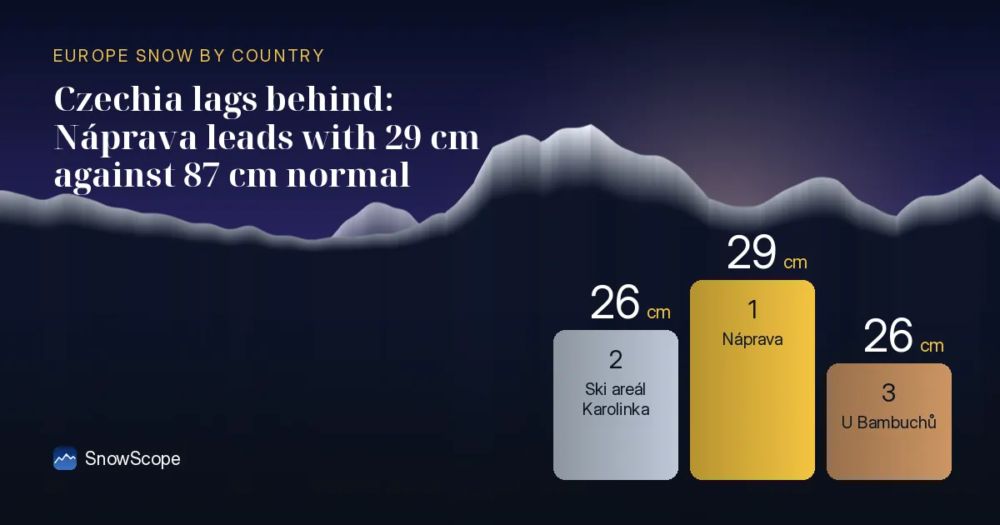
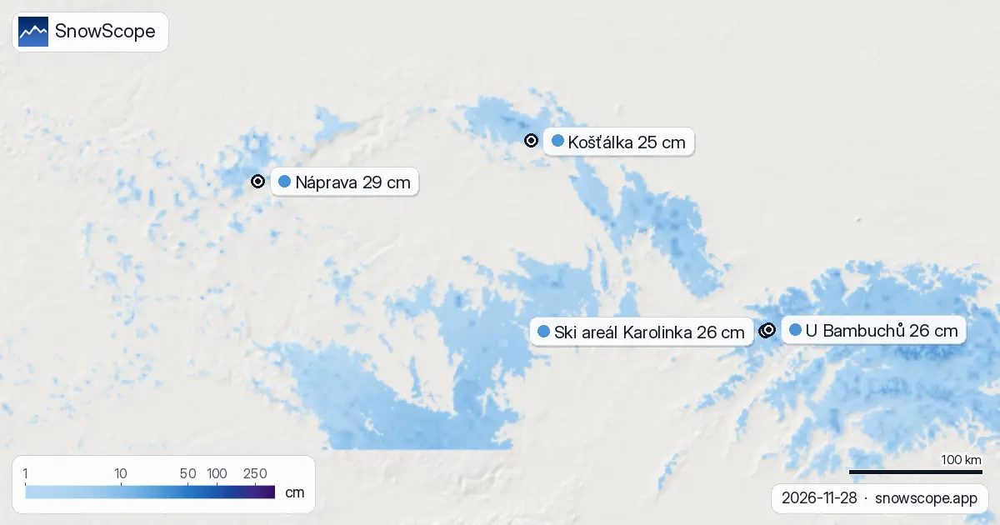

Czechia lags behind: Náprava leads with 29 cm against 87 cm normal
Náprava holds the deepest snow in Czechia at 29 cm, but this is only one third of what late November usually brings to the mountains. The country's snow reserve across 22,320 square kilometres is far behind where it should be for the season, even though the past week brought significant new snow to the high ground.
See the live snow forecast for Náprava in the SnowScope appSnow depth, powder alerts and the 3D map, free.
Snow storage well short of normal
Náprava's 29 cm sits at just 33 percent of the typical depth for 28 November. Measured at this 896-metre resort, the water stored in the snowpack is a third of what hydrologists expect when winter settles. Košťálka at 764 metres tells a different story: its 25 cm is actually 125 percent of normal, suggesting that lower-elevation sites have caught up better than the higher peaks.
Across Czechia, 78 percent of the mapped region now carries snow, up from just 7 percent one week ago. That jump shows how fast conditions changed, but the absolute depth remains thin. At elevations above 1,000 metres, SnowScope shows a mean of 6 cm with near-complete cover. Below 1,000 metres, only 4 cm lies on average across 78 percent of the ground.
| Resort | Today | Normal for the date | Share of normal |
|---|---|---|---|
| Náprava | 29 cm | 87 cm | 33 % |
| Košťálka | 25 cm | 20 cm | 125 % |

Where the new snow landed
The past 72 hours brought 13 cm of new snow to the highest parts of Czechia. Šumava captured the most, with 15 cm of fresh depth added to its snowpack. The Jeseníky received 14 cm, and the Beskydy added 10 cm. This moisture replenishes the mountain reservoirs, but starting from a low baseline means the total column is still modest.
No new snow fell in the last 24 hours, and the next three days will stay dry. SnowScope forecasts up to 7 cm across the week ahead, with the snowiest day expected on 4 December, bringing 4 cm.

Náprava leads, but barely ahead of peers
Among the 171 resorts mapped across Czechia, 156 now hold measurable snow. Náprava's 29 cm puts it at the top, followed by Ski areál Karolinka and U Bambuchů, both at 26 cm. Košťálka, despite its strong performance against normal, sits at 25 cm. Ski areál Sedlář shows 23 cm, the lowest of the five deepest sites.
The spacing between top resorts is narrow. In the past 72 hours, Ski areál Sedlář added the most of this group, gaining 12 cm, while Náprava gained only 1 cm. This highlights how variable the snow was across the mountains during the recent spell.
Water reserves building from a deficit
One week ago, Czechia held snow across only 1,890 square kilometres. Today it covers 22,320 square kilometres, a gain of over 20,000 square kilometres of white ground. For water managers tracking reservoir inflow and runoff, this rapid expansion means the mountain snowpack is now contributing to streamflow, though the total volume per unit area is still lean.
The snow line sits at 500 metres. Skiers heading to lower slopes will find patchy cover; those climbing above 1,000 metres will find more consistent white ground, though still thin by late-November standards.
Next week brings a small boost
Between 6 and 12 December, SnowScope forecasts up to 21 cm in the best locations across Czechia, more than double the week just past. This longer view suggests that the mountain snowpack will deepen over the next 10 days, though the starting point—now well below normal—means that even with fresh additions, the reserves may not reach typical mid-winter values soon.
For now, the mountains hold a thinner-than-usual water store for 28 November. The trend is upward, but the deficit is real.
Tips for skiers
- Check the official avalanche bulletin before heading off-piste, especially on steep slopes above 1,000 metres where new snow bonds to thin base layers.
- Náprava and Ski areál Karolinka have the most reliable snow depth; lower resorts below 700 metres may be patchy and need inspection.
- The past 72 hours brought the most snow to Šumava and the Jeseníky; if you are heading to these ranges, the base will be more stable than on lower slopes.
- No new snow is forecast for the next three days; conditions will firm up. Expect firn or icy patches on south-facing aspects.
- Return after 4 December for fresher conditions; the snowiest day of the week will add 4 cm, though this will still leave the season in deficit.
About these numbers
Resort snow depths are the deepest snow on the resort's upper slopes on the date shown; they are estimates for an area, not a measurement at one point. Forecasts can change. Always read the official avalanche bulletin before going off-piste.
Cite this report
For research, teaching or the press: the numbers and charts are free to reuse under CC BY 4.0 with this citation.
SnowScope (2026), Czechia lags behind: Náprava leads with 29 cm against 87 cm normal, https://snowscope.app/blog/en/2026/11/czechia-snow-behind-normal-28-november-2026.html, accessed 2026-11-28
SnowScope (Atlas Labs). (2026, November 28). Czechia lags behind: Náprava leads with 29 cm against 87 cm normal. SnowScope snow reports. https://snowscope.app/blog/en/2026/11/czechia-snow-behind-normal-28-november-2026.html
BibTeX
@misc{snowscope2026czechiasnowbehindnormal2,
author = {{SnowScope (Atlas Labs)}},
title = {Czechia lags behind: Náprava leads with 29 cm against 87 cm normal},
year = {2026},
month = nov,
howpublished = {\url{https://snowscope.app/blog/en/2026/11/czechia-snow-behind-normal-28-november-2026.html}},
note = {Published 2026-11-28 13:41 UTC; accessed 2026-11-28}
}· CC BY 4.0 · Methods, data and tools →
Náprava: snow and temperature by height, this winter vs last (tools) →
Follow Náprava
Free: a message when fresh snow is coming, and the forecast every morning.
More snow reports

Up to 30 cm of snow fell on northern Velebit and Bjelolasica on Friday 13 November 2026. By Tuesday it was gone. Day by day, what the mountains kept, and when snow comes back.
Only Borovets and Bansko have a trace of snow at the top today, 2 cm each. A week ago Borovets had 11 cm. Day by day, and the one snowy day in the forecast.

From 13 to 19 November 2026 Slovenia got the most snow and kept it; Serbia and Croatia had a deep but short white weekend; Montenegro only on Durmitor; Bulgaria almost none. The ranking, with links to each country report.